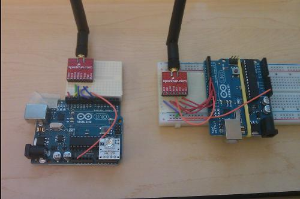

Wireless Radios

Nordic Semi nRF24L01
We are using a 2.4 GHz wireless radio that has been used by passed classes with success. We are going to use the radios to create a base station as well as a remote station that will create a bidirectional link between our platform and the desktop computer. Neil has developped the driver for this radio and has documentation and sample code on the lab website. Initially Neil was worried that the code may not be compatible with the newer Uno boards. He told us that if his code didn't work there was another library available on the Arduino Playground we could try at our own risk.
Initial Testing
When we first got our hands on the radios we decided to use the code on the Arduin Playground. This was partly due to the fact that we weren't sure if Neil's driver would work and partly due to the limited setup needed to run the sample code that came with the library. The library is called Mirf and comes with an update SPI folder containing some updated SPI code not found in the latest release of the Arduino IDE. We used some initial client/server code that would basically just send a ping from one board to another and print out the time it took to get a reply.
Wireless Gamepad Data with Mirf Library
To take this a step further we wanted to modify this basic code and start sending the gamepad data from one UNO to the other. We bread-boarded the two UNO boards with the radios and connected one to the lab desktop PC and connected the BlinkM LED to the other one. The remote station would be the one with the LED and would eventually be on the platform used to send control signals to the MEGA board. We reused our code that we used to read the gamepad data over UART from the python script, but placed it in a library we called UART with some other helpful UART functions.
We modified the code and had the LED light up on the remote station signifying that we were receiving the correct byte of information from the base station. The only issue was that the LED was not staying lit, but flashing on and off. We spent a lot of time debugging the code trying to fix any timing issues (using a call to delay()). We couldn't get the code working how we needed it to work and made a decision to look into using Neil's code. There is a lot of documentation for his driver and we talked to other groups who seem to be using the radios with his code without issue.
Neil's Radio Driver
Neil setup a radio debug station that could be used to test if our radio code was working correctly with his driver. He setup a laptop and an Arduino board with a radio that ran some code that would receive messages and print them to a serial terminal. After a few hours of reading his documentation we were able to get one Uno board to send some debug packets to the debug station and have them output on the serial terminal. After managing this all we had to do was write some similar receiving code on the other Uno to test that we could communicate between both Uno boards.
Wireless Gamepad Data with Neil's Driver
After successfully getting two Uno to communicate wirelessly we now decided to attempt sending gamepad data again over the wireless connection. Using similar code structure to the code using the Mirf library we modified the remote station to light the LED red when the right analog stick was moved upwardson the gamepad and green when the left analog stick was moved upwards. This was working, but there still seemed to be some timing issues as the LED would flash repeatedly even if the joystick remained in an upward position. After printing the received data to serial we realized that the data signifying an upward movement of the analog stick was being received, but zeros were injected into the packet at specific intervals, causing the LED to turn off then on again when the correct data was received. We discovered that this was due to some code written in our UART library. Instead of waiting until for 18 bytes to be received by the base station, it was waiting for strictly more than 18 bytes of data. By changing this condition to less than or equal we solved the problem.
Wireless Control of the Platform Motors
to do
UART
UART is a protocol which is essentially RS232 serial. It is used for interdevice communication. For example, the Arduino uses it to communicate with the PC for debugging and programming, but it can also be used for interdevice communication (Arduino to Arduino).
It is asychronous, which means some handshaking must occur to ensure data reliability. This was designed and implemented specifically for this project. Basically, two bytes are added to every packet as a form of handshaking. In retrospect, these bytes should have been at the start and front of a packet, but are instead at the beginning of each packet.
= (size+2)){
if (Serial.read()==PRE1){
if (Serial.read()==PRE2){
byte i;
for (i = 0; i < size ; i++)
buffer[i] = Serial.read();
Serial.flush();
return 1;
}
}
}
return 0;
}
void UARTsend(byte* buffer, byte size)
{
byte PRE[2] = {PRE1,PRE2};
Serial.write(PRE,2);
Serial.write(buffer, size);
}';
$geshi = new GeSHi($source, 'c');
$geshi->enable_line_numbers(GESHI_NORMAL_LINE_NUMBERS);
echo $geshi->parse_code();
?>
The receiveing function is the most interesting. It looks for a packet of a certain size passed in the function call, and checks to see if the UART buffer contains at least that size, plus two for the preamble handshake. Then it proceeds to check if the first two bytes in the buffer are equal to the defined preamble. If they are, then it reads the expected size of the packet and stores it. Then flushes the buffer. This will ensure we get fairly new data everytime. If the preamble check fails, then it will take the failed byte out of the buffer, and return 0. This function is utilized below in the main program loop below.
enable_line_numbers(GESHI_NORMAL_LINE_NUMBERS);
echo $geshi->parse_code();
?>
The worst case scenario is if the start of the UART buffer contains the second preamble byte but not the first. In that case, the function is called size+2 times before a packet is correctly received.
The preamble code was a recent addition because during one branch of our project, one arduino was sending data as fast as it could to the other arduino. This would mean that while UARTreceive is running, the buffer was actively being filled. Then, when the buffer is flushed, the start of the buffer is out of sync. This wasn't an issue before because we were sending packets every 100 ms which slow enough that the buffer was never flushed mid-packet.